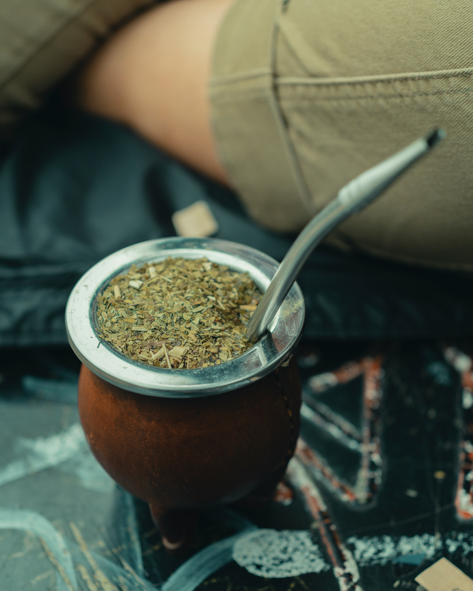
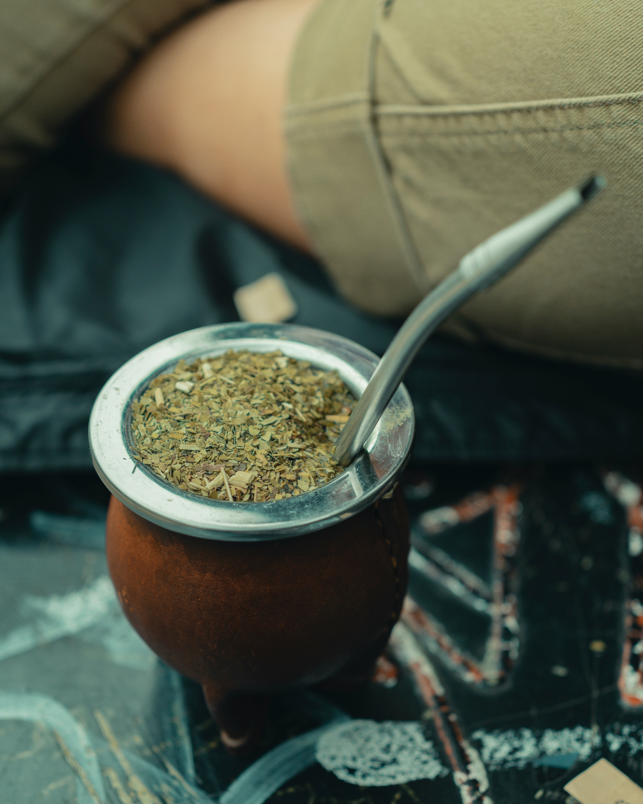

Bienvenido a Galeria
Bienvenido a nuestra galería de imágenes, donde te invitamos a explorar la diversidad y belleza
de
la tradición del mate argentino. A través de estas fotografías, podrás apreciar no solo el arte de
preparar y compartir el mate, sino también los momentos únicos y significativos que se viven
alrededor de esta emblemática bebida.


 
